Small actions, BIG DIFFERENCE

사용 후 배터리 유래 흑연 음극재
재활용 및 고부가 소재 사업화
2026년 창업도시 조성 프로젝트 · 지역창업패키지 사업계획서 · 주식회사 코솔러스

We promise tomorrow
COMPANY
창업기업 정보
첨단 화학 소재와 차세대 친환경 공정으로
폐배터리 순환경제 선도
폐배터리 순환경제 선도
대표자
김성현 | shkim@cosolus.com
창업기업명
주식회사 코솔러스 (유형: 단독)
개업연월일
2020.07.02 | 사업자 유형: 법인
본사 소재지
전북특별자치도 전주시
사업자등록번호
467-81-01725
법인등록번호
214911-0062043
과제명
사용 후 배터리 유래 흑연 음극재 재활용 및 고부가 소재 사업화
2025년 기업 현황
-
매출액 (’25년)
22명
총 고용 (’25년)
-
투자유치 (’25년)
-
누적투자 (~’25년)
매출액·투자유치·누적투자는 원본 자료 미확인으로 확인 전까지 공란 처리

2
We promise tomorrow
BACKGROUND
개발동기·목적
사용 후 배터리 재활용 시장 유망
재활용 사각지대에 놓인 흑연 음극재
배터리를 구성하는 4대 핵심소재: 양극재·음극재·분리막·전해질
양극재는 재자원화 중이나, 흑연은 경제성 부족으로 대부분 폐기
사용 후 배터리 재활용 공정 모식도
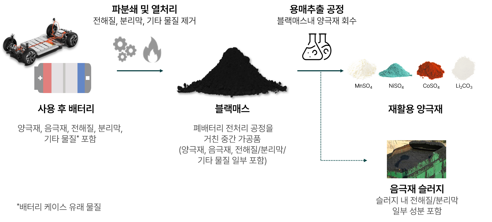
3
We promise tomorrow
BACKGROUND
원천 기술·아이디어의 우수성
사용 후 배터리 재활용은 배터리 순환경제의 핵심
탄소중립 실현
채굴 대비 낮은 탄소발자국·폐수 발생, 탄소중립 실현 핵심기술
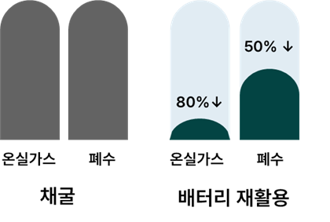
채굴 대비 배터리 재활용 비교 — 온실가스 80%↓ · 폐수 50%↓
공급망 내재화
미국 관세정책 변화 등에 따른 공급망 내재화 전략으로서 순환경제 중요성 증대
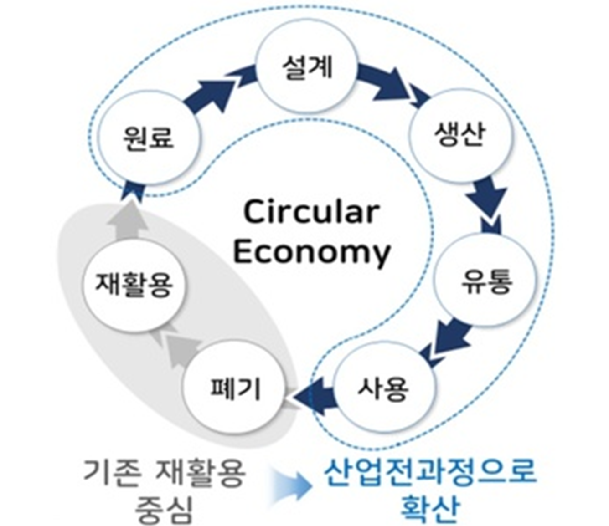
배터리 순환경제 모식도
4
We promise tomorrow
BACKGROUND
전기차 폐배터리 시장 전망
전기차 시장 성장

글로벌 전기차 폐배터리 시장 규모
전 세계 전기차(플러그인하이브리드 포함) 보급률 2.6배 확대 전망
폐배터리 발생 확대

폐배터리 발생량 전망
사용 후 배터리 발생량이 10년간 약 10배 증가할 전망
ESS 시장 성장

EV, ESS 성장 전망
AI 데이터센터 구축에 따른 북미 ESS 배터리 시장 성장
출처: 산업통상부(2023.06) · 기후에너지환경부(2025.05) · 전력거래소(2023.08)
5
We promise tomorrow
BACKGROUND
흑연 음극재 재활용 시장 전망
수요는 급증하지만 재활용률은 0% — 흑연 재활용 시장의 기회
시장과 수요
흑연 재활용 연평균 9.1% 성장 전망
710억원 → 1,680억원
2023년 → 2033년, 연평균 9.1% 성장 전망
급증하는 흑연 수요
16,023kt
2040년 글로벌 수요 전망, 전기차·ESS 성장으로 수요 확대
재활용 필요성
폐기되는 핵심소재
28%
배터리 중 흑연 비중, 경제성·정제기술 부족으로 대부분 폐기
국내 재활용 현황
0%
2024년 흑연 재자원화율, 선별회수·고순도 정제·성능 확보 필요
출처: Graphite Recycling Market(2023–2033, Allied Market Research) · The Key Minerals in an EV Battery(2022, Visual Capitalist) · The Role of Critical Minerals in Clean Energy Transitions(IEA) · 2025년 국정감사 자료(한국광해광업공단 기반)
6
We promise tomorrow
BACKGROUND
정책 모멘텀
국정과제
국정과제 "순환경제 생태계 조성" 기반, 음극재 재활용·회수 기술 고도화 추진
배터리 순환이용 활성화
배터리 순환이용 활성화 방안 기반, 소재 재활용·공정 고도화 정책적 지원
신규 정책 과제 부상
음극재·분리막 고부가 재활용 기술, 신규 정책 과제로 부상
7
We promise tomorrow
TECHNOLOGY
Cosolus 흑연 기술
버려지는 블랙매스 흑연을 99% 이상 고순도화해 고부가 소재로 전환
버려지는 블랙매스 흑연, 99% 이상 고순도화로 고부가 소재 전환
선택적 분리·정제 기술 기반, 배터리 음극재·전도성/방열 첨가제로 재자원화

흑연 소재화 모식도 — Black mass → 회수 흑연 → 고순도 정제흑연 → 음극재/전도성·방열 첨가제
8
We promise tomorrow
TECHNOLOGY
기술 개발 현황
TRL 6 기술과 연 1.5톤 파일롯 기반을 확보
친환경 고순도 공정
강산(HF)을 사용하지 않는 친환경 고순도화 공정
유도가열로 1분 이내 1,000℃ 도달 · 99% 이상 순도
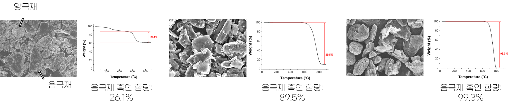
흑연 음극재 재활용 기술
Pilot 설비 기반 확보
초고온 공정 대비 에너지 투입량 64% 절감
연 1.5톤 규모 시제품 파일롯 설비 구축 중
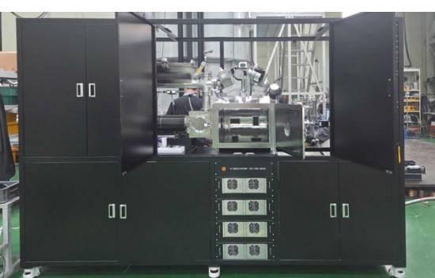
Cosolus 유도가열 정제설비
9
We promise tomorrow
TECHNOLOGY
기술고도화 로드맵
2026
울산 사업장 구축
한국에너지기술연구원 기술이전 · Series A 투자 유치(파일롯 설비 구축 및 기술검증)
2026~2027
파일롯 제조기술 확보
고순도 정제흑연 기반 음극재, 전도성/방열 첨가제 시제품 양산 연계 파일롯 제조 기술 확보
2027
설비·공정 자동화
AI/DX 기반 설비·공정 자동화 추진
GOAL · 2028
고순도 정제흑연 및 기술라이센싱
고순도 정제흑연 사업화 및 기술 라이센싱 추진
10
We promise tomorrow
TECHNOLOGY
기술개발 인력
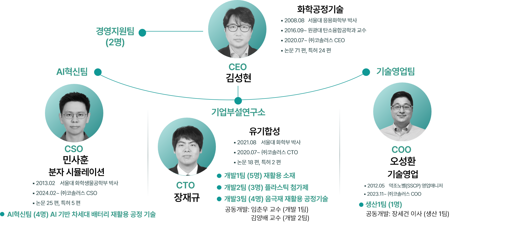
11
We promise tomorrow
TECHNOLOGY
보유 기술 및 인증 현황
특허 및 인증 기술 현황
특허 8건, 국내출원 11건, PCT 4건, 총 23건의 지식재산권 및 인증 보유
| 순번 | 특허명 | 등록/출원번호 |
|---|---|---|
| 1 | 폐배터리에서 흑연을 회수하는 방법 | (출원) |
| 2 | 마이크로웨이브를 처리하여 폐흑연을 정제하는 방법 및 그에 의해 제조된 고순도흑연 | (출원) 10-2025-0160215 |
| 3 | 사용 후 배터리로부터 폐양극재와 폐음극재의 분리방법 | (출원) 10-2025-0209511 |
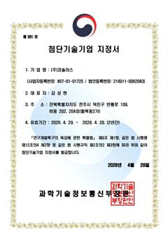
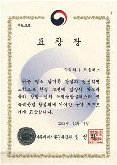
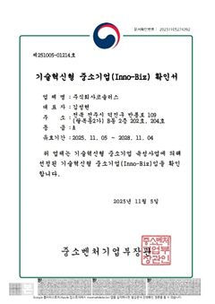
12
We promise tomorrow
MARKET
흑연 음극재 시장 성장가능성
글로벌 음극재 시장
2035년 115억 달러, 2024년 대비 2.3배 성장 전망

중국 의존도 및 글로벌 규제
중국 의존도 97% 이상, 공급망 규제로 대체 소재 수요 확대
97.6%
천연흑연 중국 수입 비중
98.8%
인조흑연 중국 수입 비중
미국·EU의 역내·우호국 공급망 정책에 따른 재활용 음극재 수요 확대
Fortune Business Insights · Energy Act of 2020 · Regulation(EU) 2023/1542(2023.08.17 시행)
13
We promise tomorrow
MARKET
사업화 모델
정제흑연 판매에서 고부가 소재로 수익원 확대
1단계 — 공정 확보
고객 요구 정제비용 USD 2/kg 수준의 공정 확보
2단계 — 정제흑연 판매
배터리용 고순도 정제흑연 판매
3단계 — 고부가 제품 확대
전도성 코팅액·방열레진 등 고부가 제품 확대

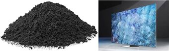
매출 목표 — 2027년 1억원 → 2029년 50억원 (정제흑연 판매+고부가 소재 확대)
14
We promise tomorrow
MARKET
고객사 분석
국내 배터리 3사 중심 약 1조원의 음극재 내수시장 형성
글로벌 점유율 1.3%, 국내 배터리 3사 기반의 시장 확대 여력 보유
공급망 다변화와 중국산 대체에 따른 국산 음극재 채택 확대 전망
| 구분 | 기업명 | 사업 및 기술 현황 |
|---|---|---|
| 1 | HS효성 (대한민국) |
· 실리콘-탄소 복합 음극재 사업 추진 · 미국 음극재 기업 인수를 통한 사업 확대 · 차세대 배터리 음극재 사업 추진 |
| 2 | 포스코퓨처엠 (대한민국) |
· 천연·인조흑연 음극재 생산 · 실리콘 음극재 개발 및 생산기반 구축 · 2030년 연산 37만 톤 생산능력 확보 계획 |
| 3 | 대주전자재료 (대한민국) |
· 실리콘-탄소 복합 음극재 개발·양산 · 글로벌 배터리 기업 대상 공급 확대 · 고에너지밀도 실리콘계 음극재 사업 확대 |
국내 주요 음극재 기업 및 기술 현황
15
We promise tomorrow
STRATEGY
경쟁사 대비 우수성
유도가열 공정의 경쟁력
| 기업명 | |
BTR | Vianode |
|---|---|---|---|
| 국가 | 한국 | 중국 | 노르웨이 |
| 기술 | 유도가열 (~950℃) | 오픈형 간접가열 (3,000℃) | 폐쇄형 간접가열 (3,000℃) |
| 처리시간 | 1분 이내 | ~24시간 | ~48시간 |
| 특징 | 낮은 에너지 소비량 | 높은 에너지 소비량 | 보통 수준의 에너지 소비량 |

16
We promise tomorrow
STRATEGY
시장확대방안
시장 확대 방향
음극재 소재 활용을 넘어 전도성/방열 첨가제 등 고부가 업사이클 제품으로 확장 기대

방열시트 시장 전망
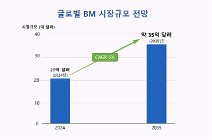
BM 시장 전망
업사이클 확대 방향
전자소재·방열소재 신규 시장 진입
전자소재·방열소재 등 신규 시장 진입 기대
목표 고객사: S사 1차 벤더 XX하이테크, XX시냅스
그래핀 원료 활용 모색
고순도 정제흑연의 그래핀 제조 원재료 활용성 모색
목표고객사: XX쎄미켐
17
We promise tomorrow
INVESTMENT
투자 유치 계획
투자 성과 및 단계별 조달 계획
투자유치 현황
누적투자
양극재 소재 및 음극재 사업화 자금 61억원 유치
Series A
2025년(Series A1) 에코프로파트너스 투자유치
투자유치 계획
후속투자
2026년 Series A2 추진, MYSC 10억원 투자 확정·해외 진출 재원 확보
생산설비 투자
2028년 Series B 추진, 자체 생산설비 구축자금 확보
내적 역량
고부가 소재 기술
양극재·음극재 재활용 소재 개발
친환경 고순도화
에너지 효율형 흑연 정제공정 확보
스마트 제조공정
DX 기반 공정 자동화·AX 확장
양산 제품 포트폴리오
기능성 플라스틱 첨가제(친환경 난연제)
친환경 난연 필름(난연제 적용 필름)
Mn 회수용 추출제(알킬사슬 제어기술 기반)
친환경 난연 필름(난연제 적용 필름)
Mn 회수용 추출제(알킬사슬 제어기술 기반)
18
We promise tomorrow
LOCALIZATION
울산 기술사업화 계획
지역 내 기술사업화 계획
① 사업장·파일롯 라인
사업장 구축 및 흑연 음극재 재활용 파일롯 라인 설치
② 기술이전·공정융합
연구원 기술이전 + 코솔러스 공정 융합·고도화
③ 인력 채용·공동연구
울산 석·박사급 인력 채용과 공동연구
④ 생산·검증
시제품 생산·고객 검증·시장경쟁력 확보
흑연 음극재 재활용 Pilot 설비 라인 모식도
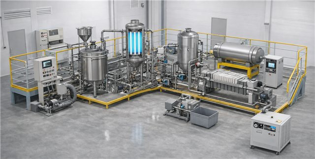
19
We promise tomorrow
LOCALIZATION
지역 활성화
지역 내 거래 계획
①
현대중공업
공정용 난연솔루션 소재 납품 추진
②
고려아연 · LS MnM · 코스모화학
울산 이차전지 특화단지 내 양극재 재활용 사업 추진 기업과의 협업 모색
③
현대자동차
폐배터리 신규 공급망 프로젝트 참여 협의
지역 내 고용 계획
①
연구인력 고용
한국에너지기술연구원과의 기술이전·고도화를 위한 석박사 인재, 울산 소재 대학에서 연간 1명 이상 고용 예정
②
생산인력 고용
시제품 개발 완료 후 생산 착수 시 지역인력 우선 채용
20
We promise tomorrow
RELOCATION
지역이전 실행계획
핵심 목표
고순도 정제흑연 실증·양산 기반 구축, 글로벌 음극재 재활용 시장 진출
①
이전 형태
본사·부설연구소·파일롯 공장
②
이전 지역
울산 이차전지 특화단지
③
이전 시기
2026년 말부터 단계적 이전
④
이전 규모
연구·파일롯 인력 2명 → 10명

21
Small actions, BIG DIFFERENCE
COSOLUS, small actions, BIG DIFFERENCE
흑연 음극재 재활용을 통한 배터리 순환경제 선도, 울산 이차전지 산업 성장 동반
주식회사 코솔러스 · 대표 김성현 | shkim@cosolus.com
전북특별자치도 전주시(본사) → 울산광역시 이차전지 특화단지(이전 예정)
전북특별자치도 전주시(본사) → 울산광역시 이차전지 특화단지(이전 예정)